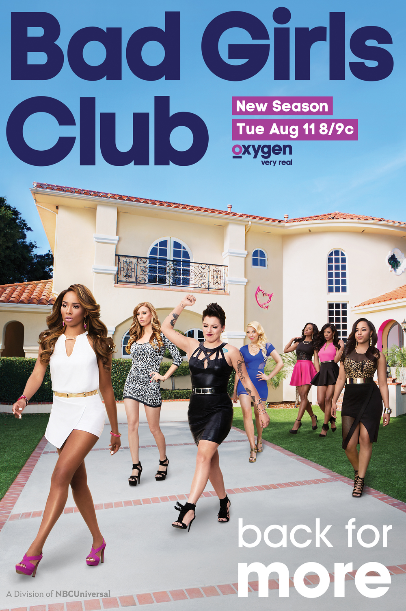
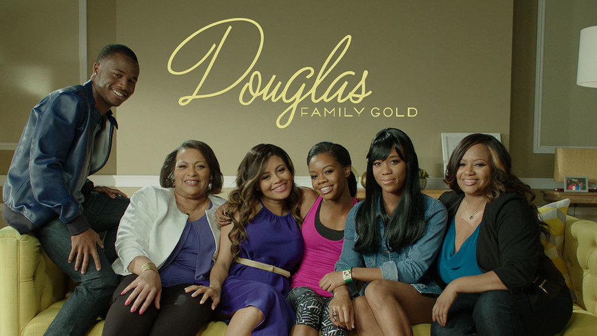
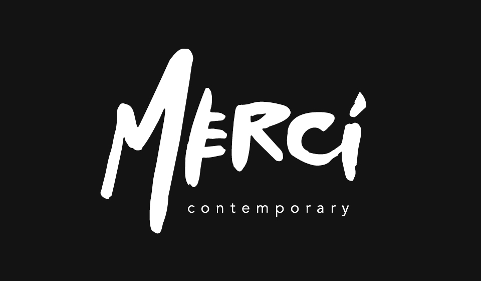
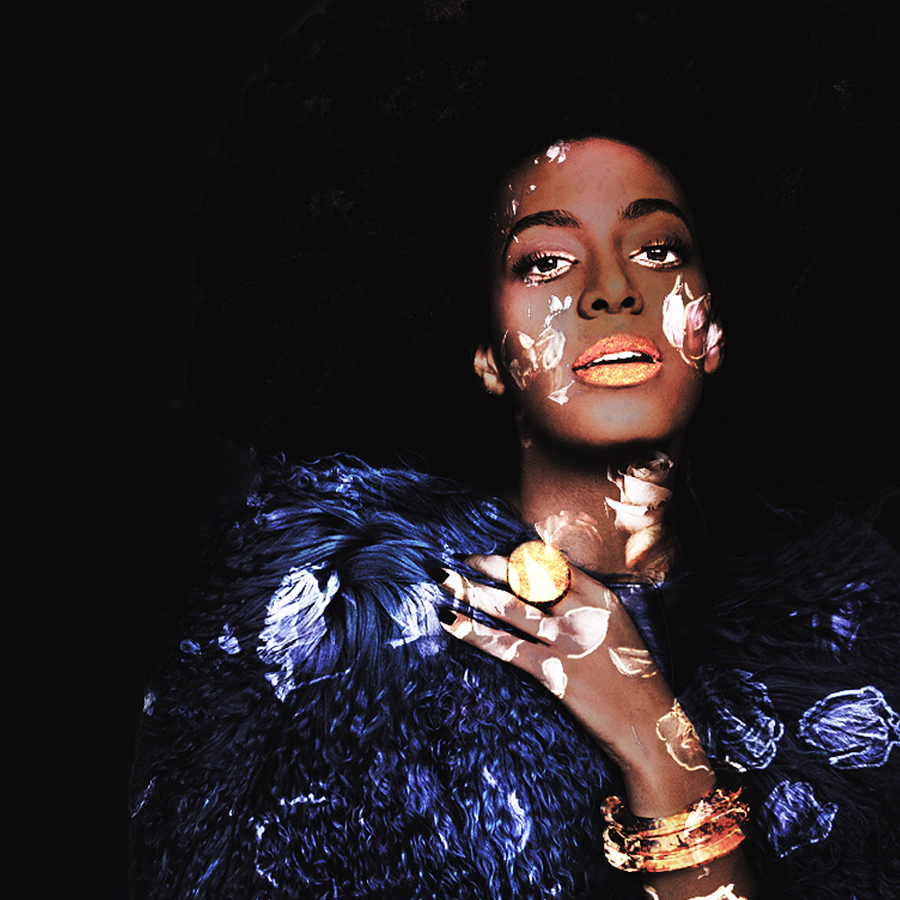
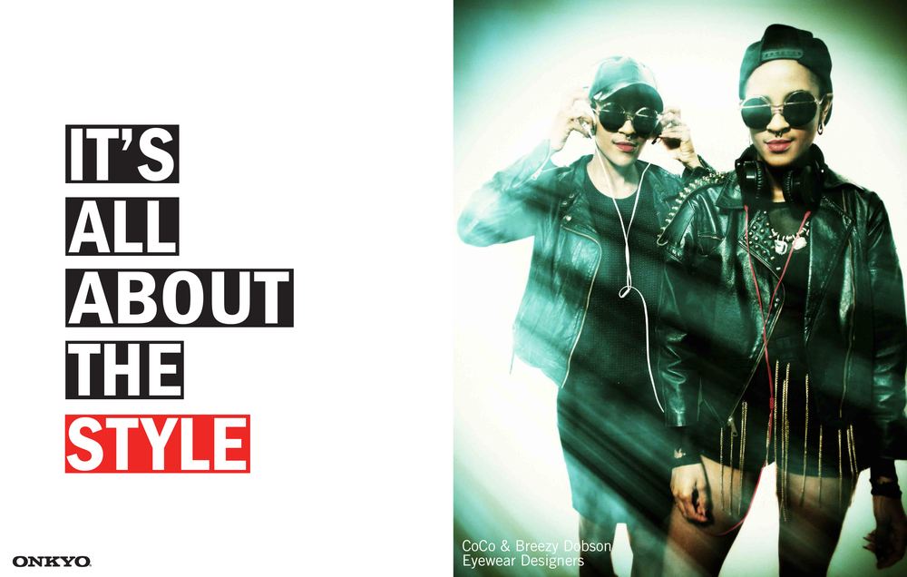
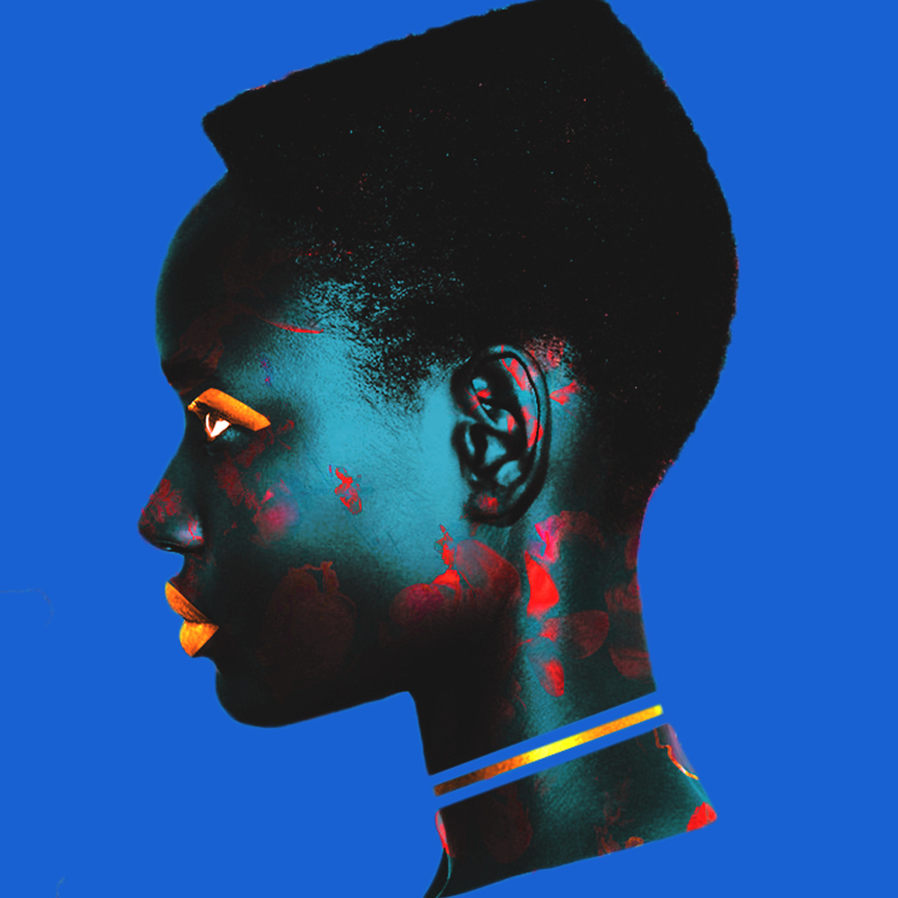

I was born on Long Island and lived in BK until my pre-teen years. I'm an only child and grew up pretty shy, so being creative has always been a mechanism to entertain myself! Although my family is from New York (Bedstuy & Jamaica Queens) both of my parents are black American, which has influenced the way I see myself as a person with an NYC identity. After my parents had split, mom and I moved to Southern MD in 2002 which was a culture shock for me! I went from a classroom filled with children of color to a class of maybe 3 or 4 children of color!
I was always an artistic child... I loved painting, and arts & crafts, and as a child, I collected magazines. From Nickelodeon Magazine, Kid City, Highlights, Zoo Animals- I kept them all! As I grew older and entered my teen years, I started saving every Elle Girl, Teen Vogue, Seventeen Magazine, J-14, & more! Originally I went to college for Stage & Set Production, but after taking a graphic class during my second semester of my first year, & returning home that summer to all of my magazines, I quickly realized I was in the wrong major. My second year of college I officially switched to a Design program.
Let us change the topic and talk about your work.
Most of my work stems in Marketing for entertainment or fashion. The most recognizable names I've worked with are AFROPUNK, NBC Universal, HBC, and I've freelanced for a few years in real estate and beauty as well. Currently, I have a side freelance business that I've been running since 2014 where I offer 360 design packages: branding + identity, web design, social assets, animations, video, & print collateral! During my personal time, I love to create digital illustrations specifically around prominent black female figures. My work is more traditionally marketing heavy versus my personal work which is more illustrative and fun!
While in college, I found a love for photography that I still incorporate into my work. I am trained in analog photography processes as well as digital photography. Being that design takes up most of my time, I haven't been able to photograph as much as I want, but being that a lot of illustration work is portrait photography based, I am always open to new models for new ideas!
In my personal time, I am working on creating an IOS app called "Merci" that has a goal of connecting local black businesses with their community through social profiles. It's in the early stages, but I am currently conducting UX research and mapping out business in the Crown Heights area of BK.
Tell us about your accomplishments.
I'm very proud that I was hired by NBC Universal almost two years out of college. Although it was an experience that wasn't a good fit for me, I am very grateful to have worked with some of the best Creative Directors and VP's in television. I'm also very proud of my freelance business that I am growing. I've always doubted myself as a designer, but clients keep coming back, so I must be doing something right!
Usually, I am one of two black designers in a company and almost always the only black female designer. I wouldn't call this an accomplishment, but I am very proud of the way I handle whiteness in the workspace. At times it can be discouraging, but I've never lost sight of my goal. No white person is going to take that from me!
What do you struggle with?
Trying to break out as an emerging digital artist or graphic designer & keeping up with all the latest technology! Every few months there's a new trend or a new program/product to make your work look even better. Keeping up is a lot of work, but you have to know these things as a designer.
What has your experience been as a person of color in the design industry?
Design is an all-boys club. An all (white) boys club to be honest. At times it has felt like my skills are looked down upon because design has such Eurocentric principles and some black designers stray away from the Swiss look to try to create something new. It's a little concerning that majority of the workspaces are white/Asian, and I do feel I can't show what I can do as a designer because the higher ups already have expectations that the white/Asian designers can do it better. Another issue I find is being able to move up from a mid-level position as a black designer; I don't see many black Sr. Designers or Assistant Art Directors.
What do you love most about working in design?
The endless possibilities! I love opening up Adobe Photoshop, creating a new canvas, and seeing new things I can create/come up with! I love the feeling of taking total ownership of your work and creating a piece from scratch, whether it's photographs, textures, typography, illustration, whatever! A designer can make every piece of the puzzle by themselves without having to use someone else for references. I love the little mistakes that end up bringing my project together. I love how design is different than art in the sense that design has a purpose: to communicate. I enjoy that I can utilize both aspects of my personality because I am definitely a type A and type B person!
What would you like to see changed about the design field?
People of Color (POC) representation. An honest evaluation into POC design aesthetics. More college courses on black graphic designers and how we've influenced design today. An honest look at developing an official "Black" style of design (similar to the Swiss). More women taking leadership roles. More inclusion of design and technology in schools. (I graduated in 2013 and some of the things designers are being taught, I've taught myself!)
Here's a question I've asked everyone. How can design be more accommodating to underrepresented populations of people?
Practice better hiring policies. Listen and take a good look at the faces in the work environment- if there's only a handful of POC, fix it. Push design in high school and get children interested in Photoshop & more. Provide monetary resources for POC that can't get into design school, but clearly, have a passion for it. Provide more internships for POC college students.
I also think creating a collective or database of high-quality POC designers that companies can source from would be beneficial.
Where do you see yourself in 5 or 10 years? Do you think you'll stay in design?
HELL YES! Design is my life. Minimalism is the principles I live by. In five years, I should be Senior Designer/Associate Art Director. In ten years I will be completely done working for a company, and hopefully, Noire (my creative agency) will have launched off!
What would you like to tell a high school student?
Make connections. Push your work out on social media, and get as many eyes on it as you can. Take criticism and learn to grow from it. Word of mouth is very powerful, don't underestimate it.